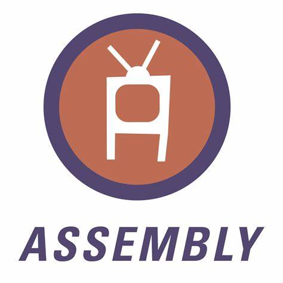

Guilherme barbosa da silva sou estudante de Engenharia de software na  Estácio estou aprendendo sobre Lógica da programação e Desenvolvimento Full-stack na
Estácio estou aprendendo sobre Lógica da programação e Desenvolvimento Full-stack na  FAISP Faculdade Interativa de São Paulo
FAISP Faculdade Interativa de São Paulo
Desenvolvimento full-stack engloba tanto a interface do usúario e o banco de dados
Sendo uma área mais generelista como front-end e banck-end
Acesse meu
Meu Hobby

SOBRE
- FLSTUDIO
- originalmente conhecido como Fruity Loops, é uma DAW (Digital Audio Workstation) criada em 1997 pelo desenvolvedor belga Didier Dambrin, projetada para produção musical, edição e mixagem.
 ORIGEM
ORIGEM- foi criado em 1997 por Didier Dambrin, um desenvolvedor belga, e inicialmente foi lançado sob o nome Fruity Loops. A intenção era fornecer uma plataforma de produção musical acessível, focada em sequenciamento de batidas e loops
 Tópicos
Tópicos- Interface Intuitiva
- Oferece uma interface gráfica amigável, facilitando a navegação e uso, especialmente para iniciantes.
- Sequenciador por Passos
- Permite a criação de batidas e padrões de forma rápida e visual.
- VST e Plugin Support:
- Suporte extensivo a plugins VST, permitindo a expansão de sons e efeitos.
- MIDI e Automação
- Recursos robustos para gravação MIDI e automação de parâmetros.
- Mixagem Avançada:
- Possui um mixer poderoso com múltiplas faixas, efeitos e roteamento.
Acesse minha criações de projetos na minha 2ªPágina
Meu Cronograma
Cronograma
Cronograma
| Cronograma |
| NEW |
| Horarios |
| NEW |
| 05:00 AM |
06:00 AM |
07:00 AM |
08:00 AM |
09:00 AM |
10:00 AM |
11:00 AM |
12:00 PM |
13:00 PM |
14:00 PM |
15:00 PM |
16:00 PM |
17:00 PM |
18:00 PM |
19:00 PM |
20:00 PM |
21:00 PM |
22:00 PM |
23:00 PM |
00:00 PM |
| NEW |
| Atividades |
| NEW |
| Iniciar |
Acordar |
Planejar |
Levantar |
Preparar o café |
Ir a academia |
Treinar |
Voltar |
Preparar o almoço |
Estudar |
Praticar |
Meditar |
Ouvir |
Treinar |
Ir ao trabalho |
Intervalo |
Voltar |
Praticar |
Estudar |
Treinar |
| NEW |
| Status |
| NEW |
| Legal |
Bom |
Ótimo |
Divertido |
Demais |
Maravilha |
Muito bom |
Lets,place |
Lets,good |
Nice |
Good,job |
Nice,work |
Very,place |
Excelente |
Explendido |
Excepcional |
Paz |
Descanso |
Melhor ainda |
Mais ou menos |
| NEW |
| NOTAS |
| NEW |
| 10 |
9 |
8 |
7 |
7 |
8 |
9 |
10 |
8 |
9 |
10 |
10 |
8 |
8 |
8 |
8 |
7 |
6 |
10 |
10 |
| NEW |
| FIM |
| NEW |
Estacio de Sá
SOBRE
 Missão
Missão- Integramos academia e gestão para oferecer uma educação transformadora ao maior número de pessoas, criando impacto positivo para a sociedade.
 Visão
Visão- EDUCAR PARA TRANSFORMAR
 Valores
Valores- Foco no aluno
- O aluno é nossa razão de ser.
- Gente e Meritocracia
- Valorizamos e reconhecemos o mérito do maior ativo que possuímos: nossa gente.
- Inovação
- Devemos criar e ousar sempre.
- Simplicidade
- Devemos ser simples para sermos ágeis e austeros.
- Resultado
- Perseguimos resultados extraordinários com paixão e método, agindo sempre como “donos”.
- Ética
- Não toleramos desvios de conduta.
- Excelência
- Perseguimos a excelência na prestação de serviços dentro e fora da sala de aula.
- Hospitalidade
- Tratamos as pessoas como gostamos de ser tratados.
Linguagens
Cursadas
 Python
Python- Desenvolvimento web, ciência de dados, automação, inteligência artificial.
Características: Sintaxe simples e legível, grande biblioteca padrão e forte comunidade. Ideal para iniciantes.
 Java
Java- Aplicações empresariais, desenvolvimento Android, sistemas de grande escala.
Características: Orientada a objetos, portável entre plataformas (JVM), robusta e segura.
 Javascript
Javascript- Desenvolvimento web (frontend e backend), aplicativos móveis.
Características: Linguagem interpretada, assíncrona, essencial para interatividade em páginas web. Popular com frameworks como React e Node.js.
 C
C- Sistemas operacionais, desenvolvimento de software de baixo nível.
Características: Linguagem de propósito geral, eficiente, permite controle direto sobre hardware. Base para muitas outras linguagens.
 C++
C++- Jogos, software de sistemas, aplicações com alto desempenho.
Características: Extensão do C, suporte a programação orientada a objetos, eficiente e com controle sobre recursos de hardware.
 C#
C#- Desenvolvimento de aplicativos Windows, jogos (com Unity), aplicações web.
Características: Linguagem orientada a objetos, integrada ao .NET, fácil de usar e com suporte para desenvolvimento multiplataforma.
 PHP
PHP- Desenvolvimento web, especialmente para criar sites dinâmicos e aplicações web.
Características: Linguagem de script do lado do servidor, fácil de aprender, com ampla integração a bancos de dados (como MySQL). Muito utilizada em sistemas de gerenciamento de conteúdo (CMS), como WordPress. Possui uma grande comunidade e muitas bibliotecas e frameworks, como Laravel e Symfony.
 Ruby
Ruby- Desenvolvimento web (especialmente com Ruby on Rails).
Características: Focada na simplicidade e produtividade, com uma sintaxe elegante. Popular para startups e protótipos rápidos.
- Assembly
- Programação de baixo nível, sistemas embarcados, otimização de performance.
Características: Linguagem de máquina, específica para arquitetura de hardware, fornece controle máximo sobre recursos, mas é complexa e difícil de ler.
Materias Cursadas
Engenharia de Software
Cursadas
| Arquitetura Computacional |
| Interação e comunicação entre o software e o hardware |
| Python |
| Linguagem de alto nível orientada e estrutura á objetos sendo multiparadigma |
| Segurança da Informação |
| Proteção de dados contra ataques cibernéticos realizados por hackers e invasores |
| Pensamento Computacional |
| Análise de forma critica do pensamento do desenvolvedor sua forma de pensar em resolução de problemas |
| Desenvolvimento WEB |
| Criação da interface e banco de dados do usúario como o front-end e o back-end |
| Matemática e Lógica |
| Fundamental em ciências exatas, engenharia, economia e muitas outras áreas. A matemática ajuda a modelar e resolver problemas do mundo real. |
| FIM |
Materias que Faltam
Engenharia de Software
Faltam
| Comportamento Organizacional |
| Forma de se comportar em uma organização |
| Banco de dados |
| Estrutura organizada para armazenar, gerenciar e recuperar dados. Pode ser relacional (tabelas) ou não relacional (documentos, chave-valor). |
| Engenharia de Usabilidade |
| Disciplina que estuda como tornar produtos e sistemas mais fáceis de usar e mais eficientes para os usuários. |
| Engenharia do Produto |
| Processo de desenvolvimento e gerenciamento de produtos, desde a concepção até o lançamento e manutenção. |
| Modelagem de Processos |
| Técnica que descreve e analisa os processos de negócio, visualizando suas etapas e interações. |
| Big data em Python |
| Big Data refere-se a conjuntos de dados que são tão grandes ou complexos que as ferramentas tradicionais de processamento não conseguem lidar com eles de maneira eficaz. |
| FIM |
Atividades Extras Curriculares
Engenharia de Software
Cursando
| Introdução à Programação: |
| Introduz os fundamentos da programação, incluindo lógica, estruturas de controle e tipos de dados. Geralmente usa uma linguagem de programação moderna (como Python ou Java) para ensinar conceitos básicos. |
| Estruturas de Dados |
| Estuda as diferentes maneiras de organizar e armazenar dados, como listas, pilhas, filas, árvores e grafos. A disciplina aborda operações, complexidade e eficiência no acesso e manipulação dos dados. |
| Algoritmos |
| Foca no design e análise de algoritmos, incluindo técnicas de ordenação, busca e complexidade algorítmica. Os alunos aprendem a avaliar a eficiência dos algoritmos em termos de tempo e espaço. |
| Engenharia de Requisitos |
| Trata da elicitação, análise, documentação e gerenciamento dos requisitos de software. Os alunos aprendem a trabalhar com stakeholders para entender suas necessidades e traduzir isso em especificações claras. |
| Design de Software |
| Aborda princípios e padrões de design de software, incluindo design orientado a objetos e design de interfaces. Os alunos praticam a criação de arquiteturas de software eficientes e escaláveis. |
| Teste de Software |
| Estuda técnicas de teste de software, incluindo teste unitário, teste funcional e teste de integração. Os alunos aprendem a garantir a qualidade do software e a identificar falhas antes do lançamento. |
| FIM |
Meus Certificados
Certificados
Certificados